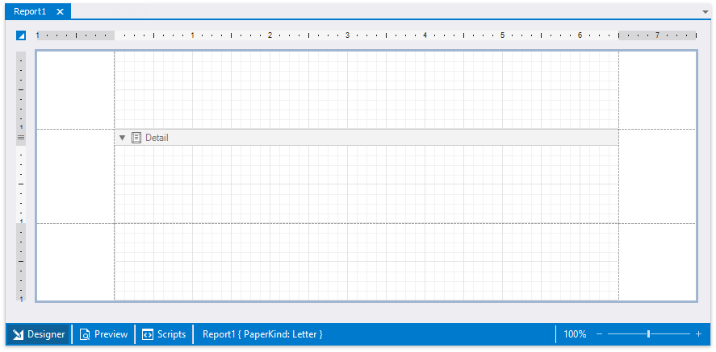

First Look at the Report Designer

The design surface displays a report's structure and contents. You can use the tools on the Report Designer's panels to design the report:
access the report's data source schema in the Field List;
drop report controls from the Toolbox to the design surface;
use the Ribbon toolbar and Property Grid to set up the report controls;
access the report's elements in the Report Explorer;
use the Group and Sort panel to manage the report's group and sort settings.
A blank report's design surface displays page margins and an empty detail band.

Use the zoom panel to change the Report Designer's default zoom factor.

Switch to the Preview tab. This opens a Print Preview and displays the generated report document with the data source's data.

Switch to the Scripts tab to manage and customize report scripts.